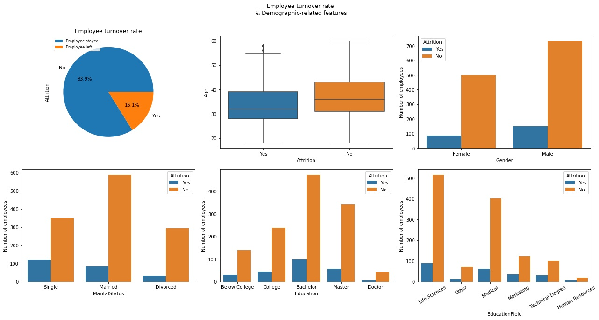

A web-based application built using AngularJS (old version)
and being migrated to Angular (new version). The application serves as a personalized firewall tool,
acting as a barrier between a trusted internal network and untrusted external networks. It monitors
and controls incoming and outgoing network traffic, helping to prevent unauthorized access and safeguard sensitive data.
Responsibilities:
- Sprint planning to discuss the parts to be migrated
- Learned Angular and worked on its important topics
- Dockerized the environment to run the application
- Writing Cypress tests before migrating the components.
- Migrating components, services and modals.
- Writing unit test with 95% coverage.
A web-based application primarily built on Perl. It involved migration of the older version to a newer one which
was more robust and faster. The older version was developed on Perl, and we migrated to the new version using Python
and developed APIs using python. The motivation behind this was to improve efficiency and performance.
Responsibilities:
- Understood the business logic
- Integrated the Test Cases affected
- Worked with complex JSON structures
- Writing Cypress tests before migrating the components.
- Worked on the development of assigned tasks
- Worked in a fully autonomous environment with distributed teams as well as directly with the client
In this project, we focused on analyzing Urdu tweets and news articles to uncover trends in Urdu media.
We developed a system that groups news from sources like newspapers and Twitter.
Then, we examined the characteristics of these groups. Our main goal was to apply clustering techniques
to mass media, using Natural Language Processing (NLP) methods. For instance, we used clustering to
group tweets and identify trends. This allowed users to quickly see the main stories within each cluster.
Our technology stack included React, Express, Nodejs, MongoDB, Python, and we integrated the Twitter API and RSS feeds.
Conducted an extensive analysis of a dataset comprising 20,000 records to delve into the factors driving
employee turnover. Our aim was to unearth insightful patterns and reasons contributing to employees
leaving their positions. The ultimate goal was to extract meaningful insights that could serve as
a foundation for recommending effective solutions to address the issue of employee churn.

Conducted an extensive analysis of a dataset comprising 20,000 records to delve into the factors driving
employee turnover. Our aim was to unearth insightful patterns and reasons contributing to employees
leaving their positions. The ultimate goal was to extract meaningful insights that could serve as
a foundation for recommending effective solutions to address the issue of employee churn.